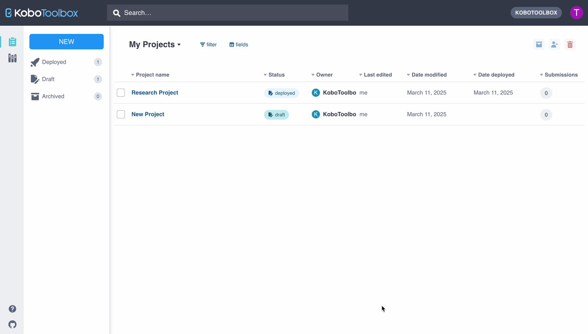

Search the knowledge base, browse our resources, and visit our forum for more detailed information
Read in English | Lire en français | اقرأ باللغة العربية Última actualización: 6 Sep 2025
Aquí va tu introducción. Ten en cuenta que el código «Última actualización» que aparece arriba se actualizará automáticamente con el nombre del artículo y la fecha correctos cuando publiques, por lo que no es necesario realizar ningún cambio manual. Recuerda nombrar este archivo de acuerdo con el título del artículo y terminar el nombre del archivo con .md.
Este artículo incluye:
Para obtener ayuda con el formato markdown o HTML, consulta esta guía.
Después de crear un nuevo artículo, no olvides agregarlo al archivo index.rst.
Esta es una lista desordenada
en markdown
Esta es una lista numerada.
en markdown.
Con una sub viñeta.
Este es un texto en negrita en markdown.
Este es un texto en cursiva en markdown.
Este es un código monoespaciado en markdown.
Esta es una cita en bloque (actualmente no se usa en la documentación)
Insertar enlaces: Para transferir la propiedad de tu Equipo a otro/a usuario/a, por favor contacta a nuestro equipo de soporte.
Obtén más información sobre nuestros servicios de capacitación.
Enlaces a otros artículos: Para obtener más información, consulta permisos a nivel de fila
Enlace a otra sección dentro del artículo. Nota: solo un # para todos los tamaños de encabezado, sin espacio entre # y el nombre del ancla, los nombres de las etiquetas de ancla deben estar en minúsculas y delimitados por guiones si son de varias palabras.
Para convertir rápidamente una URL o dirección de correo electrónico en un enlace, enciérrala entre corchetes angulares.
https://www.markdownguide.org fake@example.com
Agrega una línea para separar el contenido:
Agrega una línea en blanco…
…para comenzar un nuevo párrafo o salto de línea.
Para agregar un salto de línea completo, usa:

Almacena las imágenes en la carpeta de imágenes, en una carpeta nombrada según el artículo de soporte. Incluye el nombre de la carpeta y el nombre del archivo de imagen en la ruta del archivo anterior.
Haz clic en el ícono Más acciones para el/la usuario/a que deseas eliminar.
Haz clic en Reemplazar formulario.
Para obtener una lista completa de todos los íconos, consulta aquí y también aquí.
Recomendamos publicar videos en YouTube e insertar un enlace usando iframes.
Incluye el enlace del video de YouTube dentro del iframe.
También puedes incluir videos de la siguiente manera:
Nombre de columna |
Descripción |
|---|---|
hint |
Sugerencia de pregunta |
guidance_hint |
Sugerencia de orientación |
required |
Opción para hacer una pregunta obligatoria |
relevant |
Condiciones de lógica de salto para la pregunta |
constraint |
Criterios de validación para la pregunta |
constraint_message |
Mensaje de error cuando no se cumplen los criterios de validación |
appearance |
Opciones de cómo se muestran las preguntas |
choice_filter |
Criterios para selección en cascada |
parameters |
Configuraciones para tipos de preguntas específicas |
calculation |
Expresión matemática para pregunta de cálculo |
default |
Respuesta predeterminada para una pregunta |
type |
name |
label |
|---|---|---|
text |
yourname |
¿Cuál es tu nombre? |
survey |
Ten en cuenta el | survey | en la parte inferior de la tabla.
Si una de las columnas no es lo suficientemente grande, agrega espacios   para hacerla más ancha, como se muestra a continuación:
Configuración de exportación |
Descripción |
|---|---|
Guardar selección como… |
Marca esta opción e ingresa un nombre para tu configuración de exportación. Cuando hagas clic en EXPORTAR, esta configuración se guardará y el nombre aparecerá en el cuadro Aplicar configuración de exportación guardada. |
Dentro de cuadros de notas y tablas, usa HTML para dar formato a tu texto. Por ejemplo:
Nota importante: No es posible compartir proyectos y datos entre los dos servidores. Esto significa que todos/as los/as usuarios/as que trabajen en un proyecto compartido deben usar el mismo servidor para acceder al proyecto. Agrega un enlace en HTML de esta manera.
Nota: Para obtener más información sobre los permisos a nivel de fila, consulta acceso a nivel de fila.
Nota: Para obtener más información sobre los tipos de preguntas en XLSForm, consulta Tipos de preguntas (XLSForm.org).
Servidor |
URL |
|---|---|
Servidor Global |
|
Servidor con sede en la Unión Europea |
Puedes descargar archivos aquí y los archivos multimedia aquí. Los archivos están almacenados en ./_static/files/media/.
Saltos de línea en HTML:
Esta es la primera línea.
Y esta es la segunda línea.
Haz que tu texto esté en negrita, cursiva, o código monoespaciado.
Agrega una lista numerada:
Agrega una lista sin numerar:
k-icon-angle-bar-left
k-icon-angle-bar-right
k-icon-angle-down
k-icon-angle-left
k-icon-angle-right
k-icon-angle-up
k-icon-arrow-down-left
k-icon-arrow-down-right
k-icon-arrow-down
k-icon-arrow-left
k-icon-arrow-right
k-icon-arrow-up-left
k-icon-arrow-up-right
k-icon-arrow-up
k-icon-caret-down
k-icon-caret-left
k-icon-caret-right
k-icon-caret-up
k-icon-kobo
k-icon-cascading
k-icon-drag-handle
k-icon-duplicate
k-icon-edit
k-icon-expand-list
k-icon-expand
k-icon-file-audio
k-icon-file-image
k-icon-file-video
k-icon-file-xls
k-icon-file-xml
k-icon-file
k-icon-group-split
k-icon-group
k-icon-media-files
k-icon-question
k-icon-settings
k-icon-skip-logic
k-icon-view-all
k-icon-view
k-icon-qt-acknowledge-lock
k-icon-qt-acknowledge
k-icon-qt-area-lock
k-icon-qt-area
k-icon-qt-audio-lock
k-icon-qt-audio
k-icon-qt-background-audio
k-icon-qt-barcode-lock
k-icon-qt-barcode
k-icon-qt-calculate-lock
k-icon-qt-calculate
k-icon-qt-date-lock
k-icon-qt-date-time-lock
k-icon-qt-date-time
k-icon-qt-date
k-icon-qt-decimal-lock
k-icon-qt-decimal k-icon-qt-external-xml-lock
k-icon-qt-external-xml
k-icon-qt-file-lock
k-icon-qt-file
k-icon-qt-hidden-lock
k-icon-qt-hidden
k-icon-qt-line-lock
k-icon-qt-line
k-icon-qt-meta-default
k-icon-qt-note-lock
k-icon-qt-note
k-icon-qt-number-lock
k-icon-qt-number
k-icon-qt-photo-lock
k-icon-qt-photo
k-icon-qt-point-lock
k-icon-qt-point
k-icon-qt-question-matrix-lock
k-icon-qt-question-matrix
k-icon-qt-range-lock
k-icon-qt-range
k-icon-qt-ranking-lock
k-icon-qt-ranking
k-icon-qt-rating-lock
k-icon-qt-rating
k-icon-qt-select-many-from-file-lock
k-icon-qt-select-many-from-file
k-icon-qt-select-many-lock
k-icon-qt-select-many
k-icon-qt-select-one-from-file-lock
k-icon-qt-select-one-from-file
k-icon-qt-select-one-lock
k-icon-qt-select-one
k-icon-qt-text-lock
k-icon-qt-text
k-icon-qt-time-lock
k-icon-qt-time
k-icon-qt-video-lock
k-icon-qt-video
k-icon-archived
k-icon-data-sync
k-icon-deploy
k-icon-document
k-icon-download
k-icon-drafts
k-icon-language-alt
k-icon-language-default
k-icon-language-settings
k-icon-language
k-icon-logout
k-icon-menu
k-icon-project-archived
k-icon-project-deployed
k-icon-project-draft
k-icon-project-locked
k-icon-project-overview
k-icon-project
k-icon-projects
k-icon-replace
k-icon-upload
k-icon-user-share
k-icon-user
k-icon-users
k-icon-filter-arrows
k-icon-filter
k-icon-map-view
k-icon-gallery
k-icon-globe-alt
k-icon-layer
k-icon-hide
k-icon-reports
k-icon-sort-ascending
k-icon-sort-default
k-icon-sort-descending
k-icon-table
k-icon-unfreeze
k-icon-folder-in
k-icon-folder-out
k-icon-folder-plus
k-icon-folder-public
k-icon-folder-shared
k-icon-folder-subscribed
k-icon-folder
k-icon-freeze
k-icon-block
k-icon-library-public
k-icon-library
k-icon-template-locked
k-icon-template
k-icon-alert
k-icon-check-circle
k-icon-check
k-icon-close
k-icon-expand-arrow
k-icon-flows
k-icon-help-articles
k-icon-help
k-icon-information
k-icon-link
k-icon-lock-alt
k-icon-lock
k-icon-minus
k-icon-more-vertical
k-icon-more
k-icon-notification
k-icon-pause
k-icon-play
k-icon-plus
k-icon-search
k-icon-spinner
k-icon-stop
k-icon-trash
k-icon-warning
k-icon-email
k-icon-help-academy
k-icon-help-forum
k-icon-logo-github
k-icon-logo-instagram
k-icon-logo-linkedin
k-icon-logo-twitter
k-icon-mail
k-icon-intercom
k-icon-subscribe
k-icon-unsubscribe
k-icon-attach
k-icon-editor
k-icon-heatmap
k-icon-pdf
k-icon-pins
k-icon-print
k-icon-spreadsheet
Did you find what you were looking for? Was the information clear? Was anything missing?
Share your feedback to help us improve this article!
KoboToolbox is maintained by Kobo Inc.